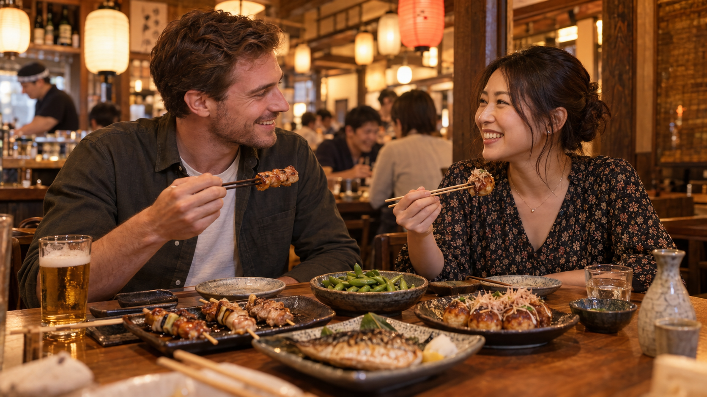

We're here for the nights that start with "just a quick bite" and turn into the stories you tell for years.

For founders Yumi Tanaka and John Reed, the best part of Japan was never about a dish. It was about the feeling around the table.
They met in Osaka in 2017, working at a tiny neighborhood bar. After service, they'd follow the smoke to the nearest street stall: skewers over charcoal, cold beer, and conversation. Back in the USA, they missed that easy kind of togetherness. So in 2021 they opened Matsuri in a small San Francisco lot. An open kitchen, bar seating, and a menu of the things they wanted to eat after a long day. Today there are three Matsuris, but the idea hasn't changed. Cook with care. Pour generously. Make everyone feel like a regular, even on their first visit.